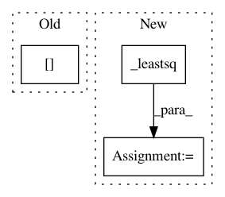

7885c7f254146ca7a78a6a0b50165e1f12ad529a,dipy/reconst/ivim.py,,two_stage,#Any#Any#Any#Any#Any#Any#Any#Any#Any#Any#Any#Any#,279
Before Change
flat_x0 = x0.reshape(-1, x0.shape[-1])
// Flatten for the iteration over voxels:
bvals_ge_split = gtab.bvals[gtab.bvals > split_b]
bvecs_ge_split = gtab.bvecs[gtab.bvals > split_b]
gtab_ge_split = gradient_table(bvals_ge_split, bvecs_ge_split.T)
tensor_model = TensorModel(gtab_ge_split)
tenfit = tensor_model.fit(data[..., gtab.bvals > split_b])
After Change
result = _minimize(flat_data, bvals, flat_x0, ivim_params,
bounds, tol, jac, algorithm, gtol, ftol, eps)
elif routine == "leastsq":
result = _leastsq(flat_data, bvals, flat_x0, ivim_params)
ivim_params.shape = data.shape[:-1] + (4,)
return ivim_params
In pattern: SUPERPATTERN
Frequency: 3
Non-data size: 3
Instances
Project Name: nipy/dipy
Commit Name: 7885c7f254146ca7a78a6a0b50165e1f12ad529a
Time: 2016-06-24
Author: shahnawaz.ahmed95@gmail.com
File Name: dipy/reconst/ivim.py
Class Name:
Method Name: two_stage
Project Name: nipy/dipy
Commit Name: 3202b9db141e612f93a05cbee39624e18f30994a
Time: 2016-08-18
Author: shahnawaz.ahmed95@gmail.com
File Name: dipy/reconst/ivim.py
Class Name: IvimModel
Method Name: fit
Project Name: nipy/dipy
Commit Name: da39858bf9000c97527264eff5fe7c16e2edbdc3
Time: 2016-08-12
Author: shahnawaz.ahmed95@gmail.com
File Name: dipy/reconst/ivim.py
Class Name: IvimModel
Method Name: estimate_D_star